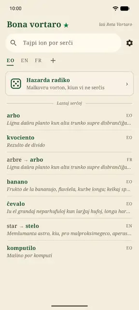
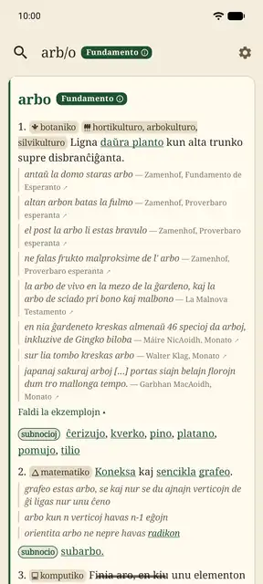

Bona vortaro
قراءة وكتابة
Bona vortaro is an Esperanto dictionary for Android. It contains the whole Reta Vortaro (ReVo), the free Esperanto dictionary, with its translations into more than 170 languages, and works without Internet access. • Search in Esperanto and in your other languages, with or without accents (cx → ĉ), a
✓ ترخيص مفتوح (GPL-2.0-only) · آخر تحديث: 2026-11-20
0.9الإصدار
26.8 MBالحجم
GPL-2.0-onlyالرخصة
Open in Kanzتحميل APK (26.8 MB)
Download APK
SHA-256: be92b25884c0b24b06d02b17a2d009498b59b552355d9e1057d5287904ae9b51


امسح الكود لفتح صفحة التطبيق
Scan to open this app page
لو كنز مش متثبت عندك: نزّل متجر كنز.
Not installed? Get the Kanz store.